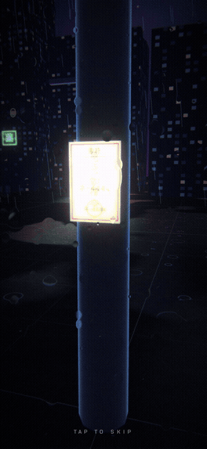
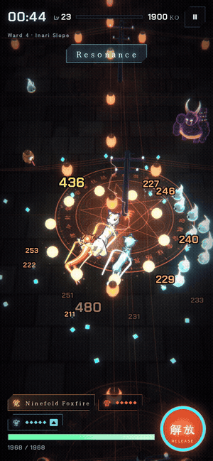
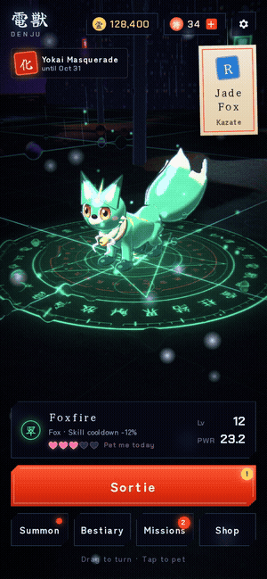

Press kit
Everything you need to cover DENJU. Use any of it freely in articles, videos and streams; cropping and resizing are fine. If you cover the game, a link to your piece is always appreciated.
About
DENJU is a 3D survivor action game for iPhone, steeped in Japanese folklore. Call the denju, spirit beasts asleep in a city's power lines, and purify the Noise that floods the streets at night. At its heart is the Kanji Summon: pick two of 30 kanji, each shown with its meaning (雷 thunder, 龍 dragon, 桜 sakura, 闇 darkness...), and the denju living in that word wakes up. There are 870 pairs, and the same pair always calls the same denju for everyone.
Battles take one finger: drag to move while your skills fire on their own. Pick upgrades, Awaken your skills and fill the screen with lightning across ten wards and ten Calamities from Japanese myth, including Raijin, the Great Centipede and Omagatsuhi. A run takes about three minutes.
Features
- Kanji Summon: 870 pairs of kanji, one beast each, the same for everyone. A Kanji of the Day for all players, and Kanji Match to see how two pairs get along.
- 25 kinds × 4 ranks, and shinies: Fox, Wolf, Kirin, Dragon and Phoenix across five elements. Higher ranks wear sacred ropes, halos and crowns; a UR fox becomes a Nine-Tails.
- One finger against the horde: Skills fire on their own. Pick one of three upgrades, Awaken your skills, and unleash the Seal Release.
- Night Parade: A weekly endless mode: the same ward and Anomalies for everyone, with Game Center leaderboards and friend challenges.
- Pet, bond and Ascend: Pet your denju at Home every day. At full bond it Ascends, growing from a cub into a fearsome beast.
Fact sheet
| Title | DENJU (電獣) |
|---|---|
| Genre | Kanji-summon, Japanese-folklore 3D survivor action |
| Platform | iPhone (iOS 15.0 or later) |
| Price | Free to play (optional in-app purchases) |
| Release | October 23, 2026 |
| Languages | English, Japanese |
| Regions | United States, United Kingdom, Canada, Australia, New Zealand, Singapore, Japan |
| Content | 30 kanji and 870 pairs, 25 kinds × 4 ranks, 10 wards and 10 Calamities, a weekly Night Parade, 28 Game Center achievements |
| Developer | Sanraku (サン楽), a solo game developer in Japan |
| Website | https://mtddzd5vw2-gif.github.io/en/ |
| App Store | https://apps.apple.com/app/id6816935558 |
| Contact | wakahisamk@gmail.com |
Key art


Logo and icon
GIF

GIF 4.4 MBMP4 2.3 MB

GIF 6.3 MBMP4 2.8 MB

GIF 5.4 MBMP4 2.8 MB

GIF 3.3 MBMP4 0.6 MB

GIF 5.5 MBMP4 2.3 MB
Video
MP4 14 MB
MP4 6.6 MB
Each GIF above also comes as an MP4 of the whole scene (600 × 1298, 30 fps): use the link under it.
Screenshots
1320 × 2868 JPG. Tap for full size.
English


Japanese


Contact
Sanraku (サン楽), a solo game developer in Japan
Email: wakahisamk@gmail.com
Website: https://mtddzd5vw2-gif.github.io/en/